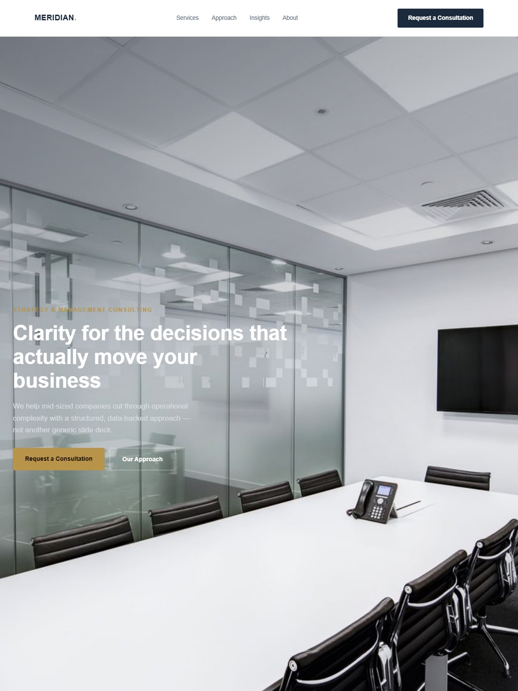

Meridian Advisory Group es una consultora de estrategia boutique con 12 años y una reputación sólida construida casi entera por recomendación. Su web — tocada por última vez en 2015 — jugaba activamente en su contra: no se adaptaba al móvil, no describía con claridad a qué se dedican y no había nada que un cliente potencial pudiera encontrar buscando.
La firma perdía propuestas con regularidad frente a competidores más jóvenes y con menos experiencia — sencillamente porque esos competidores parecían más creíbles en internet antes de que llegara la primera llamada.
| Área | Hallazgo | Gravedad |
|---|---|---|
| Experiencia de uso | No se adapta al móvil, montada sobre una plantilla de hace una década — la maqueta se rompe en cualquier móvil o tableta. | Alta |
| Arquitectura de contenido | Ni una página propia por área de práctica — todo apelotonado en una sola página de «Servicios» sin ninguna profundidad. | Alta |
| SEO | Cero páginas indexadas posicionando para ningún término de búsqueda relevante de consultoría — en la práctica, invisible en buscadores. | Alta |
| GEO / visibilidad ante la IA | Preguntados directamente, ChatGPT y Perplexity no tenían nada que citar sobre la firma — invisible también para quien investiga con IA. | Media |
Un posicionamiento claro en la primera pantalla, señales de credibilidad antes de detallar ningún servicio, y una página propia por área de práctica — decidido antes de tomar una sola decisión visual.
Esquema de baja fidelidad — la credibilidad se establece antes siquiera de describir ningún servicio.

La nueva portada de Meridian — un posicionamiento de verdad en la primera pantalla, cifras reales en vez de un muro genérico de logos de clientes.
Cada decisión visual de esta página responde a un hallazgo del diagnóstico:
Los asistentes de IA como ChatGPT, Perplexity o el resumen con IA de Google responden a partir de información estructurada y coherente que pueden encontrar por la web — no a partir de la opinión que una firma tiene de sí misma. Un sitio con datos estructurados claros y la misma descripción en todas partes tiene sencillamente más probabilidades de ser la fuente que cita un asistente cuando alguien pregunta «qué consultora de estrategia es buena para una empresa mediana». Esa es toda la premisa del GEO: escribir para que una máquina te cite bien, no solo para que lo lea una persona.
«Meridian no necesitaba un equipo comercial más grande. Necesitaba que su web dejara de deshacer doce años de reputación antes incluso de la primera reunión.»